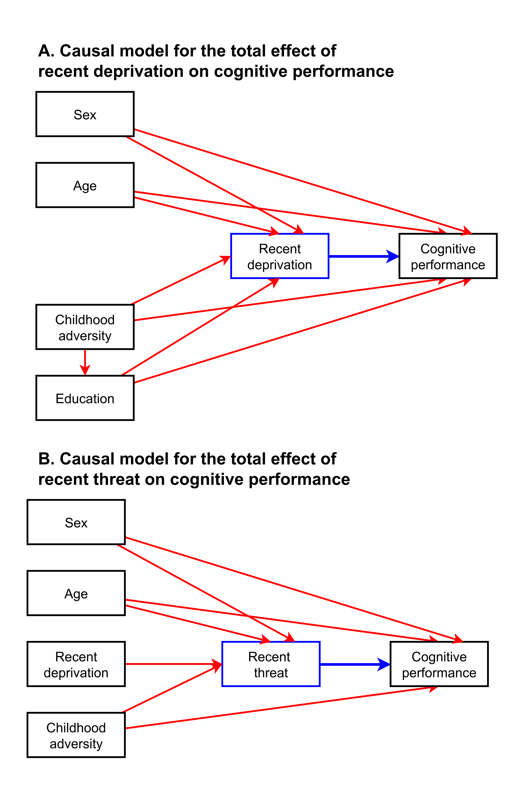
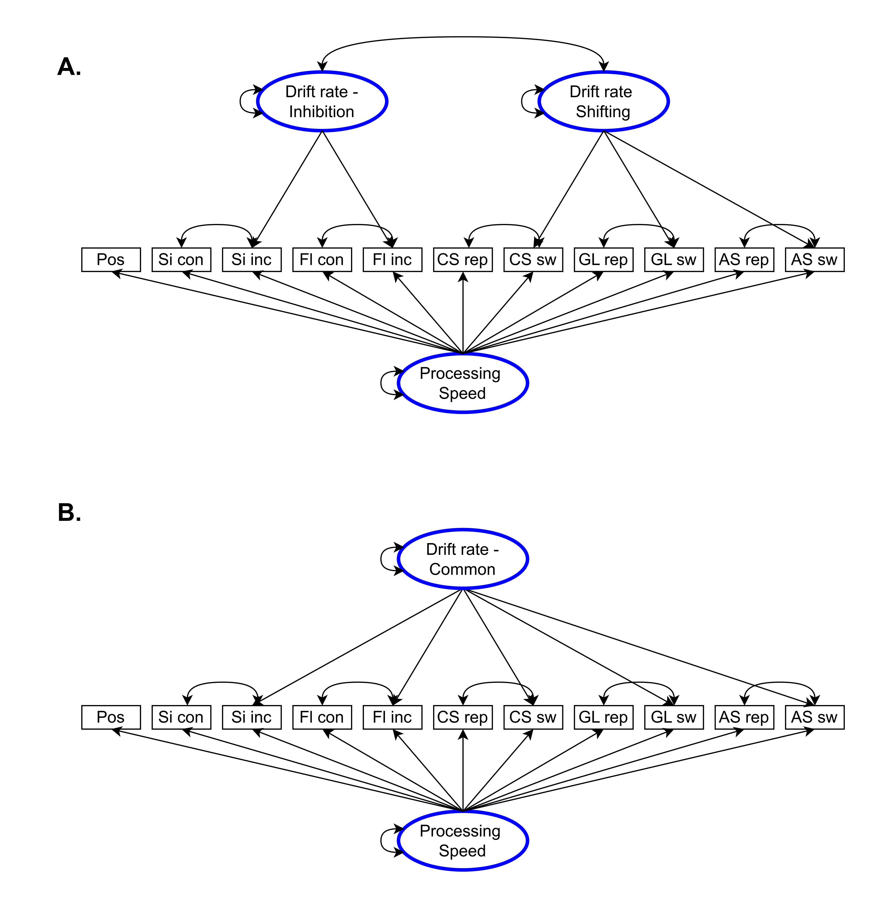
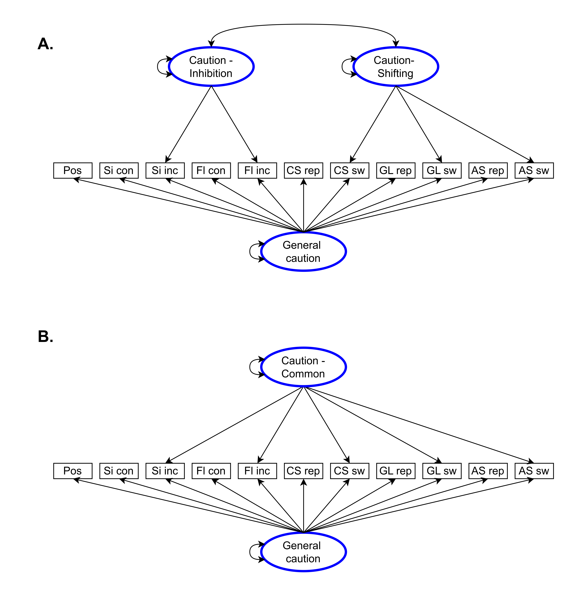

Last updated on Tuesday, June 04, 2024 at 05:20 PM
Overview
The independent measures used in this study are drawn from studies that were previously conducted in the Longitudinal Internet studies for the Social Sciences (LISS) panel. These data are openly available after signing an agreement with LISS. The dependent measures will be part of a new data collection in the LISS panel which is scheduled between May 2024 and July 2024.
As this study partly uses secondary data, this preregistration document is based on the template by Akker et al. (2021). Where necessary, we make clear which decisions relate to/are based on secondary data, and which decisions relate to/are based on newly collected data.
There are six parts, which you can jump to following the links below:
Part 1 - Study Information
Q1: Preliminary title DONE
“Attention shifting and inhibition abilities among people from adverse conditions”
Q3: Research Questions
R1: How is adversity associated with general speed of processing across all cognitive tasks?
R2: How is adversity associated with inhibition and attention shifting abilities after accounting for general speed of processing?
R3: How is adversity associated with task-general and task-specific response caution?
Q4: Hypotheses
Data patterns that would be consistent with hypotheses about abilities generated from a deficit framework:
A1. Adversity is negatively associated with general speed of processing.
A2. Adversity is negatively associated with either or both latent estimates of inhibition and attention shifting, after accounting for general speed of processing.
A3. If latent estimates of inhibition and attention shifting are highly correlated, adversity is negatively associated with a general EF factor spanning both.
Data patterns that would be consistent with hypotheses about abilities generated from adaptation frameworks:
B1. Adversity is positively associated with the latent estimate of attention shifting regardless of the association with inhibition, after accounting for general speed of processing. A positive association with inhibition would be unexpected yet interesting, and would require revising existing adaptation theoretical frameworks.
B2. The association between adversity and the latent estimate of attention shifting is practically equivalent to zero and the association between adversity and the latent estimate of inhibition is negative.
Finally, we have the following hypothesis about response caution:
- C1. Adversity is associated with more task-general response caution.
Go back to Overview.
Part 2 - Data Description
Q5: Dataset DONE
Our study will include 1000 participants who were randomly sampled from the LISS panel (Scherpenzeel, 2011). The LISS panel is a representative probability sample of roughly 5,000 Dutch households (~7,500 individuals) drawn from the population register by Statistics Netherlands on an invite-only basis. Households without a computer or internet connection are provided with these facilities by LISS. Each year, participants complete the same core battery of questionnaires about—among other topics—their financial situation in the past year. In addition, participants can complete additional online questionnaires every month, with variable content. The current study integrates two data sources. First, our sample of 1000 participants will participate in a new LISS study between May 2024 and July 2024 (hereafter referred to as ‘newly collected data’), in which we will include a measure of neighborhood threat, three cognitive tasks measuring attention shifting, two cognitive tasks measuring inhibition, and one cognitive task measuring processing speed. Second, we will access data that were previously collected in LISS (hereafter referred to as ‘the LISS archive’).
Q6: Public Availability DONE
All datasets are available in the LISS data archive. Researchers who want to access the data are required to sign a statement confirming that information about individual persons, households, etc., will not be released to others (go to https://statements.centerdata.nl for more information).
Q7: Data Access DONE
Data can be accessed through the following links.
- Convential and Computer Crime Victimization study, doi: https://doi.org/10.17026/dans-zch-j8xt
- Economic Situation: Income, doi: https://doi.org/10.17026/dans-24y-dkqk
- Background variables, doi: https://doi.org/10.57990/qn3k-as78
After the new data have been collected, they will become available in the general overview at https://www.dataarchive.lissdata.nl/study-units/view/1
Q8: Date of Download DONE
- Stefan Vermeent (lead author and data analyst)
- For a full overview of when specific independent variables in the LISS data archive were previously accessed, see the ‘Overview of project milestones’ section at https://github.com/StefanVermeent/liss_ef_2024.
- Anna-Lena Schubert will not access the data.
- Jean-Louis van Gelder will not access the data.
- Willem E. Frankenhuis will not access the data.
Q9: Data Collection DONE
General information about recruitment of participants into the LISS study can be found at https://www.lissdata.nl/methodology.
Our study will include 1,000 participants who were randomly sampled from the LISS panel. The requirements will be that they are between 20 and 55 years old and have completed at least 1 wave of the Conventional and Computer Crime Victimization study (see Q10).
Q10: Codebooks DONE
Detailed codebooks for existing data in the LISS archive can be downloaded at the following links:
- Convential and Computer Crime Victimization study, doi: https://doi.org/10.17026/dans-zch-j8xt
- Economic Situation: Income, doi: https://doi.org/10.17026/dans-24y-dkqk
- Background variables, doi: https://doi.org/10.57990/qn3k-as78
Codebooks for the newly collected data will become available later at https://github.com/StefanVermeent/liss_ef_2024
Go back to Overview.
Part 3 - Variables
Q11: Manipulated Variables: DONE
Not applicable
Q12: Measured Variables
Potential confounders
We identified potential confounders of the empirical estimands (i.e., the association between self-reported threat and deprivation with cognitive outcomes) using a Directed Acyclic Graph (DAG). We analyzed the following variables both conceptually (i.e., based on previous literature and/or our own assumptions) and, in cases of doubt, statistically: (1) age, (2) sex, (3) childhood adversity exposure (material deprivation and threat combined), and (4) recent material deprivation as a confounder for the effect of threat on cognitive performance.
Estimand 1: Material deprivation -> Cognitive performance. See Figure 2A for a visualization of the DAG for material deprivation. We identified as confounders (1) age (Salthouse, 2019, 2016; Starns & Ratcliff, 2010), (2) education (Hofmarcher, 2021; lovden_2010?), (3) biological sex (Ning et al., 2023), and (4) childhood adversity (Bos et al., 2009; Goodman et al., 2019). All models involving material deprivation as the main predictor will control for these four covariates. In line with recent work, we consider material deprivation to precede threat exposure (Bywaters et al., 2016; Ning et al., 2023). For this reason, we do not include threat exposure in models where we are interested in the total effect of material deprivation on cognitive performance.
Estimand 2: Threat exposure -> Cognitive performance. See Figure 2B for a visualization of the DAG for threat exposure. We considered the same set of confounders as for material deprivation. However, in the case of threat exposure, we were conceptually less sure about the potential effects of age and education on threat exposure. We also wanted to gather more empirical support for the assumption that material deprivation should be considered as a confounder of the effect of threat exposure on cognitive performance (Bywaters et al., 2016; Ning et al., 2023).
Table 1 offers an overview of conceptual and statistical evidence for and against each potential confounder. Statistical analysis of potential confounders was based on data from a previous LISS study (see Q17 and Q18) using the dagitty R package (Textor et al., 2016). Specifically, we used the dagitty::localTests() function to establish whether DAG-implied conditional independencies between certain key variables were supported by these data (Ankan et al., 2021). The outcome in these conceptual DAGs was working memory capacity, measured on a latent level in the previous LISS study. For each of the three confounders under investigation, we removed the causal pathway between that variable and threat exposure from the DAG, and then tested whether this imposed independence (conditional on the other causal effects in the model) was consistent with the data. Code for these analyses can be found under scripts/00_dag.
Table 1. Conceptual and statistical confounder analysis for the threat exposure model. | ||||
|---|---|---|---|---|
(Potential) confounder | Causal effect on cognitive performance | Causal effect on recent threat | Evidence for conditional independence | Confounder in threat model |
Age | Unclear |
| Yes | |
Education | Lövdén et al. (2020) | Unclear |
| No |
Sex | Ning et al. (2023) | Ning et al. (2023) |
| Yes |
Childhood adversity | Bywaters et al. (2016) |
| Yes | |
Recent material deprivation | Estimand of interest |
| Yes | |
Note: the second and third columns present conceptual support (based on previous literature and/or our own assumptions) in favor of a causal effect between the confounder and threat and cognitive performance. The embedded plots in column 4 present the outcome of statistical analyses that tested against independence between the confounder and threat exposure, conditional on other variables associated with both [see @ankan_2021 and the main text for more details]. | ||||
| ||||
![]()
![]()

![]()
We found evidence against conditional independence between age and threat. We also found evidence against independence between material deprivation and threat exposure, conditional on age and childhood adversity. Finally, we did not find evidence against conditional independence between education and threat. Therefore, all models involving recent threat exposure as the main predictor will control for age, sex, childhood adversity, and recent material deprivation.
Independent Variables
Our plan for IV computation is identical to that in a previous project using LISS data (see Q17 and Q18). While we know how the different subscales correlated with each other in that project, the current project will consist of a (partially) different subsample of the LISS panel. While we expect that IV computation will be identical to that project, we leave open the possibility that correlations could fall out differently, thus requiring different approaches.
Perceived resource scarcity (Mean). This is a measure of perceived deprivation. It will consist of
Perceived resource scarcity (Coefficient of variation). This is a measure of unpredictability
Income-to-needs ratio (Mean). This is a measure of objective deprivation.
Income-to-needs ration (Coefficient of variation). This is a measure of unpredictability
Neighborhood threat. This is a measure of neighborhood threat.
Dependent Variables DONE
The exact nature and number of dependent variables will depend on the final latent model that will be selected (see Part 5, Q19). As a rule, we will estimate associations between each measure of adversity and each latent factor that is estimated.
Q14: Missing data DONE
We will use Full Information Maximum Likelihood (FIML) to handle missing data.
Q15: Outliers
For each cognitive task, we will remove trials with: (1) Response times (RTs) < 250 ms; (2) RTs > 3 SD above the participant-level average log-transformed mean RT, separately for different task conditions (e.g., congruent and incongruent). Finally, if a participant performs at chance level on a task, we will exclude task data of that particular task only. Chance level will be determined using the accuracy rate at the 97.5% tail of a binomial distribution if a participant would be purely guessing.
Q16: Sample Weights DONE
Not applicable
Go back to Overview.
Part 4 - Knowledge of Data
Q17: Relevant Publications DONE
All authors have previously used the same independent adversity measures to measure their associations with working memory performance. The Registered Report associated with this project has received Stage 1 In-Principle Acceptance at Peer Community in Registered Reports (https://osf.io/dp7wc). The sample in this study consisted of ~800 people from the LISS panel. An unknown portion of these people is also expected to participate in the current study.
Q18: Prior Knowledge
In a previous study (mentioned in Q17) we used the same independent adversity measures. From this study, we know that the perceived scarcity measures correlated > .60 with each other, allowing computation of uniformly weighted averages. We also know that correlations among the three threat measures, a well as the perceived scarcity coefficients of variation, were low, thus requiring PCA. Although the current study will consist of a (partially) different sample, we expect to reach the same conclusions here.
From this study, we know that none of the adversity measures was significantly associated with working memory capacity or working memory updating. The inhibition and attention shifting data have not yet been collected at the time of writing this preregistration. Therefore, we do not know how the adversity measures are associated with inhibition and attention shifting.
Go back to Overview.
Part 5 - Analyses
Q19: Hypotheses -> Statistical Tests DONE
Step 1: DDM estimation. We will fit all DDM models as hierarchical Bayesian models in JAGS using the runjags package (Denwood, 2016).
For the Posner Task, we will estimate a single drift rate, non-decision time, and boundary separation across all trials:
"model {
#likelihood function
for (t in 1:nTrials) {
y[t] ~ dwiener(alpha[subject[t]],
tau[subject[t]],
0.5,
delta[subject[t]])
}
for (s in 1:nSubjects) {
tau[s] ~ dnorm(muTau, precTau) T(.0001, 1)
delta[s] ~ dnorm(muDelta, precDelta) T(-10, 10)
alpha[s] ~ dnorm(muAlpha, precAlpha) T(.1, 5)
}
#priors
muTau ~ dunif(.0001, 1)
muDelta ~ dunif(-10, 10)
muAlpha~ dunif(.1, 5)
precAlpha ~ dgamma(.001, .001)
precTau ~ dgamma(.001, .001)
precDelta ~ dgamma(.001, .001)
}"For all other tasks, we will estimate drift rate and non-decision time separately for each task condition (e.g., incongruent and congruent), while keeping boundary separation equal across conditions:
"model {
#likelihood function
for (t in 1:nTrials) {
y[t] ~ dwiener(alpha[subject[t]],
tau[condition[t], subject[t]],
0.5,
delta[condition[t], subject[t]])
}
for (s in 1:nSubjects) {
for (c in 1:nCon) {
tau[c, s] ~ dnorm(muTau[c], precTau) T(.0001, 1)
delta[c, s] ~ dnorm(muDelta[c] , precDelta) T(-10, 10)
}
alpha[s] ~ dnorm(muAlpha, precAlpha) T(.1, 5)
}
#priors
for (c in 1:nCon){
muTau[c] ~ dunif(.0001, 1)
muDelta[c] ~ dunif(-10, 10)
}
muAlpha~ dunif(.1, 5)
precAlpha ~ dgamma(.001, .001)
precTau ~ dgamma(.001, .001)
precDelta ~ dgamma(.001, .001)
}"Each model will be fitted using three Markov Chain Monte Carlo (MCMC) chains. Each chain will start with 2,000 burn-in samples, followed by 10,000 additional samples. Of these 10,000 samples, every 10th sample will be retained to limit autocorrelation, resulting in a total of 3,000 posterior samples across all chains.
Model fit will be assessed in three ways. First, we will visually inspect the traces of the group-level parameter estimates, which should not contain large jumps or drifts. Second, we will calculate the Gelman-Rubin statistic (R^), which should be lower than 1.1 (Gelman & Rubin, 1992). Third, we will conduct simulation-based parameter recovery. From each participant’s DDM parameter estimates, we will simulate 500 RTs and corresponding accuracies. We will calculate Pearson correlations between simulated and observed RTs (at the 25th, 50th, and 75th percentile) as well as simulated and observed accuracy rates. RT correlations need to be .80 or higher to indicate good fit. For accuracy rates, we will use the same cut-off, unless there are ceiling effects (> 95%), which is likely for congruent/repeat trials. Thus, if accuracy for one condition shows poor recovery, but accuracy for the other condition and all RT quantiles are recovered well, we will still consider this good model fit.
Step 2: SEM. We will construct the final SEM sequentially. First, we will optimize the fit of the drift rate, boundary separation, and non-decision time sub-models. Second, we will combine these three models into a single measurement model. Third, we will add the regression paths between measures of adversity and the latent factors.
Drift rate sub-model. The baseline drift rate model will be a bi-factor model which accounts for general processing speed. A latent processing speed factor will load on all the manifest drift rates. A latent inhibition factor will load on the manifest drift rates of incongruent trials of the Flanker and Simon Task. A latent Attention Shifting Task will load on the manifest drift rates of switch trials of the Color-shape, Global-local, and Animacy-size Task.

We will first fit the model as specified in Figure 2A (see mod_v1a in the code block below). Then, we will fit a second version of this model in which a single common EF factor is estimated, covering both inhibition and attention shifting tasks. Using lavaan::anova, we will then test whether the second, more constrained model leads to worse model fit, qualified as a significant chi squared change test, and an AIC value > 10. If so, we will include submodel 2 in our final model.
# Drift rate model 1 (see Figure 1A)
mod_v1a <- '
# Latent factors
ps =~ 1*pos_v + flanker_inc_v + flanker_con_v + simon_inc_v + simon_con_v + cs_sw_v + cs_rep_v + gl_sw_v + gl_rep_v + as_sw_v + as_rep_v
inh =~ 1*flanker_inc_v + simon_inc_v
as =~ 1*cs_sw_v + gl_sw_v + as_sw_v
# Covariances
inh ~~ as + 0*ps
as ~~ 0*ps
'
fit_v1a <- lavaan::sem(
model = mod_v1a,
data = data
)
# Drift rate model 1, constrained version (see Figure 1B)
mod_v1b <- '
# Latent factors
ps_v =~ 1*pos_v + flanker_inc_v + flanker_con_v + simon_inc_v + simon_con_v + cs_sw_v + cs_rep_v + gl_sw_v + gl_rep_v + ansi_sw_v + ansi_rep_v
ef_v =~ 1*flanker_inc_v + simon_inc_v + cs_sw_v + gl_sw_v + ansi_sw_v
# Covariances
ps_v ~~ 0*ef_v
'
fit_v1b <- lavaan::sem(
model = mod_v1b,
data = data
)
lavaan::anova(fit_v1a, fit_v1b)Boundary separation sub-model. Like the drift rate model, the baseline boundary separation model will be a bi-factor model containing a general boundary separation factor, as well as inhibition- and attention shifting-specific factors (see Figure 3A). We will use the same procedure to choose between the baseline model, and a second model estimating a common boundary separation factor.

Non-decision time sub-model. The baseline model for the non-decision time, as well as the model selectin procedure, will be identical to the drift rate and boundary separation models (see Figure 3A).
Full measurement model. After determining the final sub-model for all three DDM parameters, we will combine them all into a single model. We expect that we will have to estimate covariances between latent factors of different DDM parameters that share at least one manifest variable (e.g., inhibition drift rates and general boundary separation). However, we foresee that we might have to add or remove covariances to improve model fit. These steps will be taken before accessing and adding the independent variables.
Final model. After finalizing the full measurement model, we will add the adversity measures as predictors to the model. Each adversity measure will be regressed on each latent factor. We will estimate covariances between each pair of adversity measures.
Q20: Predicted effect sizes DONE
We do not have specific predictions for effect sizes but we deem standardized regression coefficients for interaction effects = .10 (or higher) and -.10 (or lower) meaningful. These effects would indicate that an effect of adversity on a a particular aspect of performance score is meaningfully more negative or more positive.
Effects between -.10 and .10 are not of interest for determining differences between adversity and aspects of performance. However, we are interested in determining if simple effects falling between -.10 and .10 are consistent with an effect of 0. For this scenario, we will use Two One-Sided T-tests (TOST) equivalence testing with -.10 and .10 as bounds.
Q21: Statistical Power DONE
A power analysis based on Kretzschmar & Gignac (2019) indicated that with an alpha of α = 0.05, we will have > 90% power to detect small effect sizes (β = 0.1) with a sample size ranging between N = 730 and N = 980 when the reliability of the measures is at least moderate (0.6 – 0.7). Therefore, we aim for a total sample size of N = 1,000.
Q22: Inferential Criteria DONE
We will use an alpha level of .05 throughout. p-values will be corrected for multiple testing using the false discovery rate. We will do so separately for tests involving drift rates, non-decision times, and boundary separations, as we have different hypotheses for each of these parameters.
We will test for three types of associations between different types of adversity and cognitive ability (as indexed by the drift rates): enhanced ability, impaired ability, or intact ability. Enhanced cognitive ability is defined as a positive association between adversity and drift rate. Impaired cognitive ability is defined as a negative association between adversity and drift rate. intact ability is defined as an association that is practically equivalent to zero. We define practical equivalence as a standardized effect falling between -0.10 and 0.10. We will use two one-sided tests (TOST) equivalence testing against these bounds to test for practical equivalence.
Q23: Assumption Violations/Model Non-Convergence DONE
In case of non-normally distributed variables, we will use
If any assumptions are violated, we will update the preregistration and/or report deviations from the preregistration. However, we do not anticipate any serious violations.
Q24: Reliability and Robustness Testing
NA
Q25: Exploratory Analyses DONE
We do not preregister any exploratory analyses.
Go back to Overview.
Part 6 - Statement of Integrity
We state that we filled out this preregistration to the best of our knowledge and that no other preregistration exists pertaining to the same hypotheses and dataset.
References
Akker, O. R. van den, Weston, S., Campbell, L., Chopik, B., Damian, R., Davis-Kean, P., Hall, A., Kosie, J., Kruse, E., Olsen, J., Ritchie, S., Valentine, K. D., Veer, A. van ’t., & Bakker, M. (2021). Preregistration of secondary data analysis: A template and tutorial. Meta-Psychology, 5. https://doi.org/10.15626/MP.2020.2625
Ankan, A., Wortel, I. M. N., & Textor, J. (2021). Testing graphical causal models using the R package “dagitty.” Current Protocols, 1(2), e45. https://doi.org/10.1002/cpz1.45
Bos, K. J., Fox, N., Zeanah, C. H., & Nelson III, C. A. (2009). Effects of early psychosocial deprivation on the development of memory and executive function. Frontiers in Behavioral Neuroscience, 3, 16. https://doi.org/10.3389/neuro.08.016.2009
Bywaters, P., Bunting, L., Davidson, G., Hanratty, J., Mason, W., McCartan, C., & Steils, N. (2016). The relationship between poverty, child abuse and neglect: An evidence review. York: Joseph Rowntree Foundation.
Denwood, M. J. (2016). Runjags: An R package providing interface utilities, model templates,parallel computing methods and additional distributions for MCMC models in JAGS. Journal of Statistical Software, 71, 1–25. https://doi.org/10.18637/jss.v071.i09
Gelman, A., & Rubin, D. B. (1992). Inference from iterative simulation using multiple sequences. Statistical Science, 457–472. https://doi.org/10.1214/ss/1177011136
Goodman, J. B., Freeman, E. E., & Chalmers, K. A. (2019). The relationship between early life stress and working memory in adulthood: A systematic review and meta-analysis. Memory, 27(6), 868–880. https://doi.org/10.1080/09658211.2018.1561897
Hofmarcher, T. (2021). The effect of education on poverty: A European perspective. Economics of Education Review, 83, 102124. https://doi.org/10.1016/j.econedurev.2021.102124
Kretzschmar, A., & Gignac, G. E. (2019). At what sample size do latent variable correlations stabilize? Journal of Research in Personality, 80, 17–22. https://doi.org/10.1016/j.jrp.2019.03.007
Lövdén, M., Fratiglioni, L., Glymour, M. M., Lindenberger, U., & Tucker-Drob, E. M. (2020). Education and cognitive functioning across the life span. Psychological Science in the Public Interest, 21(1), 6–41. https://doi.org/10.1177/1529100620920576
Ning, K., Gondek, D., Pereira, S. M. P., & Lacey, R. E. (2023). Mediating mechanisms of the relationship between exposure to deprivation and threat during childhood and adolescent psychopathology: Evidence from the Millennium Cohort Study. European Child & Adolescent Psychiatry. https://doi.org/10.1007/s00787-023-02289-3
Salthouse, T. A. (2019). Trajectories of normal cognitive aging. Psychology and Aging, 34(1), 17–24. https://doi.org/10.1037/pag0000288
Salthouse, T. A. (2016). Little relation of adult age on cognition after controlling general influences. Developmental Psychology, 52(10), 1545–1554. https://doi.org/10.1037/dev0000162
Starns, J. J., & Ratcliff, R. (2010). The effects of aging on the speed–accuracy compromise: Boundary optimality in the diffusion model. Psychology and Aging, 25(2), 377–390. https://doi.org/10.1037/a0018022
Textor, J., Zander, B. van der, Gilthorpe, M. S., Liśkiewicz, M., & Ellison, G. T. (2016). Robust causal inference using directed acyclic graphs: The R package “dagitty.” International Journal of Epidemiology, 45(6), 1887–1894. https://doi.org/10.1093/ije/dyw341